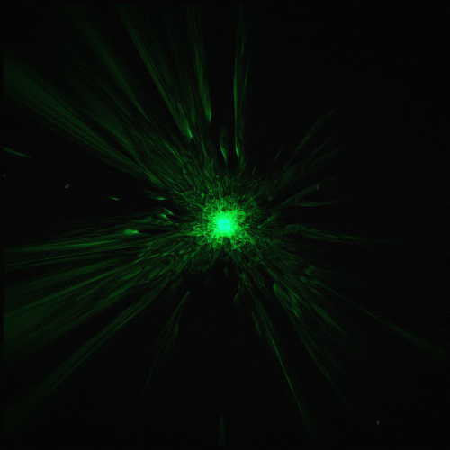

☀️
Home
About
Roadmap
Projects
Blogs & Write-ups
Sys_Br3ach3r's Write-ups & Blogs

user@write-ups:~$
Write-ups
hacking-hub-messagebox-write-up
Rootme CTF Walkthrough (Tryhackme)
user@Blog:~$
Blogs
bug-bounty-hunting-101
Python Power: Create Your Own Network Port Scanner